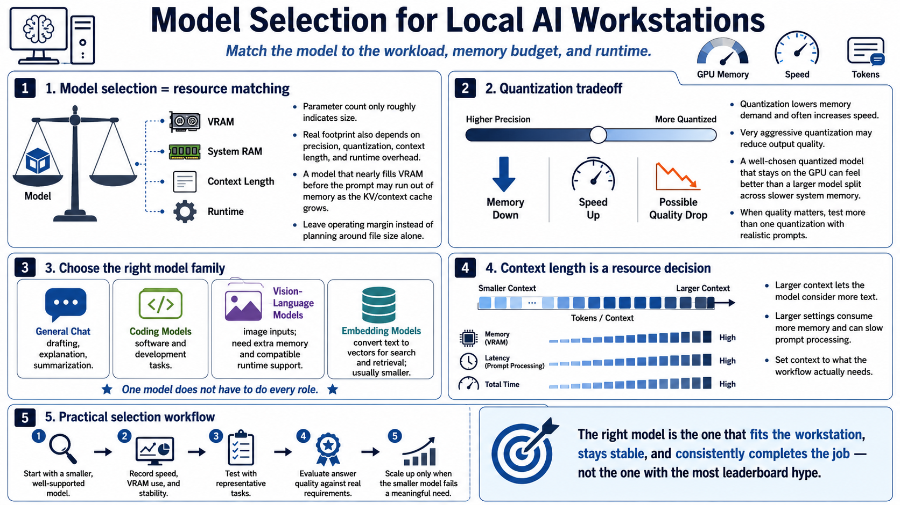

Choosing Models for the Machine
Connecting to LMS... Progress: in progress

Narration
Model selection is a resource-matching exercise. Parameter count provides a rough indication of model size, but the loaded footprint also depends on numerical precision, quantization, context length, and runtime overhead. A model that nearly fills VRAM before receiving a prompt may run out of memory as its context cache grows. Leave operating margin instead of treating published file size as the complete requirement.
Quantization reduces the precision used to store model weights, lowering memory demand and often increasing speed. The tradeoff can include some loss of output quality, especially at very aggressive settings. A well-chosen quantized model that remains on the GPU often produces a better interactive experience than a larger model split heavily across slower system memory. Test more than one quantization when quality matters, using prompts that reflect the real task.
Choose the model family for the workload. General chat models are useful for drafting, explanation, and summarization. Coding models prioritize software tasks. Vision-language models accept images but require additional memory and compatible runtime support. Embedding models convert text into vectors for search and retrieval; they are usually smaller and should be selected for language, retrieval quality, and application compatibility. Do not assume one model must perform every role.
Context length controls how much text the model can consider, but larger settings consume memory and can slow prompt processing. Set context to what the workflow actually needs. Begin with a smaller, well-supported model that runs reliably, record speed and memory use, and evaluate answer quality against representative tasks. Scale upward only when the smaller model fails a meaningful requirement. A stable model that fits the workstation and consistently completes the job is the right model, regardless of leaderboard fashion.